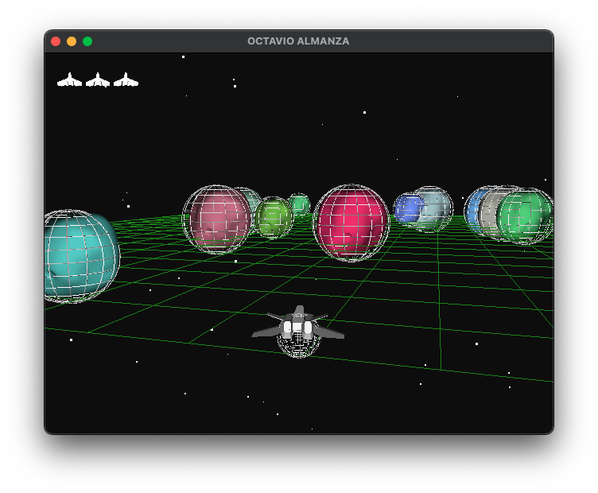

ANIMATION TECHNIQUES
- Dynamic Keyframes • The core goal of the project was to implement dynamic keyframing. In assignment 1, we implemented keyframes that were set at compile time. In my project, keyframed animations can be triggered by the press of a button. The the positions of the keyframes are functions of the position and velocity of the ship at the moment the animation was triggered.

- Particle Effects •
I also decided to implement a particle system to better convey actions and events in the game.
Particles are generated whenever the ship accelerates in the forward direction.
As the particle approaches the end of its lifespan, its color transitions from a deep red to a light yellow.
Particles are also created whenever the asteroids are destroyed. A particle explosion can be seen following the collision of a beam and an asteroid. If the ship collides with an asteroid and it has no more lives left, the ship will explode as well.
My explosion system was adapted from theParticleclass provided for Lab 6, which usesGL_POINTSdrawn as "billboarded" quads with alpha blending.

- Collision Detection •
Collisions are managed through bounding spheres for both the asteroids and the spaceship.
When initialized, each asteroid has a predetermined radius that is used to calculate the size of its hitbox.
Continuous sphere-to-sphere collision detection is performed for the spaceship and all of the asteroids.
Laser beams are represented internally by line segments, and line-sphere intersections are performed to check if they collide with any asteroids while they are "active".

-
Whenever the hitbox of an asteroid overlaps with the hitbox of the spaceship, the spaceship either explodes or takes damage in the form of a life.
The ship will turn red to convey that it took damage.